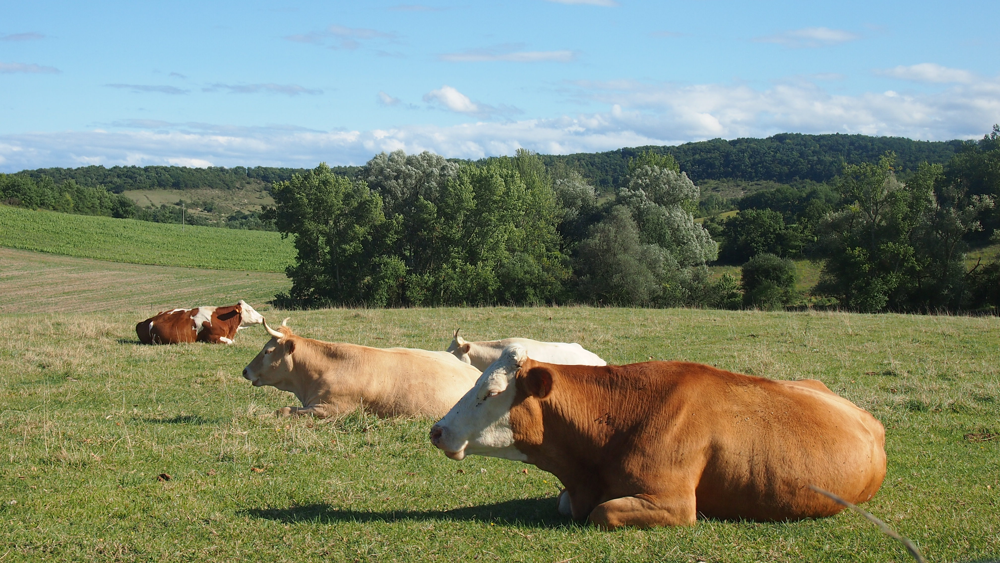

Brève Histoire
Près de 30 ans d'engagement pour une agriculture respectueuse
Naissance de la ferme, portée par nos idéaux de protection de l'environnement, de bien-être animal et de santé humaine.
Construction de la fromagerie et arrivée des premières brebis laitières.
Arrivée des premières vaches jersiaises, issues d'un troupeau renommé à Orléans.
Nouvel essor avec de nouvelles terres familiales. Début de la production de fromage de chèvre. Les ventes se concentrent sur les marchés commingeois.
Début de la conversion au label Agriculture Biologique — élevage et transformation.
Formation du GAEC familial — Groupement d'Exploitation en Commun.
Obtention de la certification Agriculture Biologique 🌿
Tournant majeur : remplacement de la production de fromage par celle d'œufs, une source de protéines accessible à tous. Développement de l'agroforesterie.

Notre Territoire
90 hectares répartis sur trois îlots en Haute-Garonne
Coteaux calcaires secs dans les Petites Pyrénées.

Coteaux argilo-calcaires et plaine de la rivière du Jô, dans les Petites Pyrénées.
Plaine limono-sableuse en bord de Garonne.